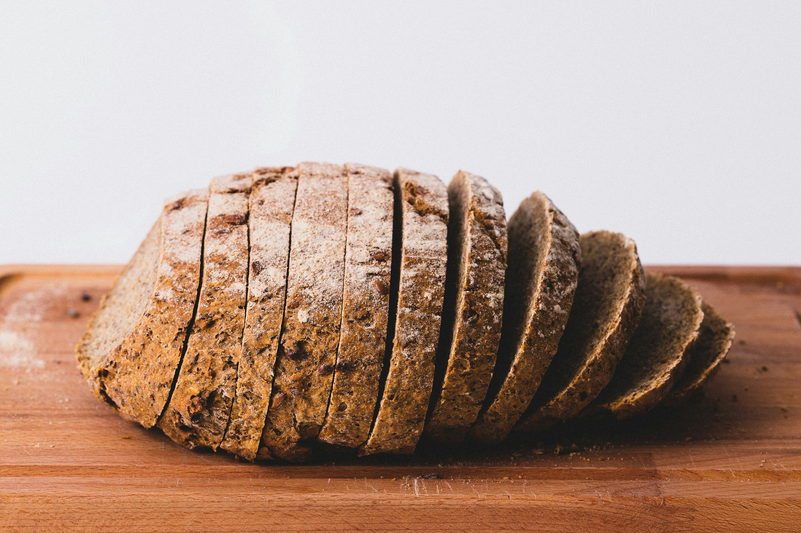
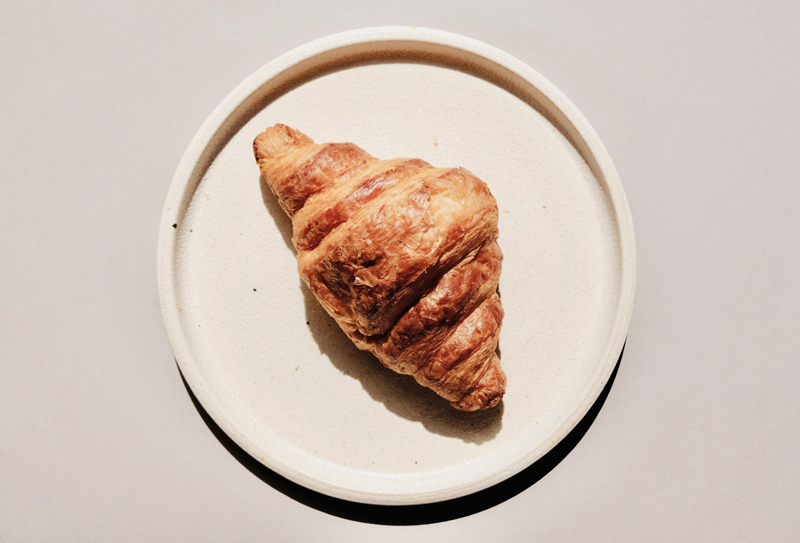
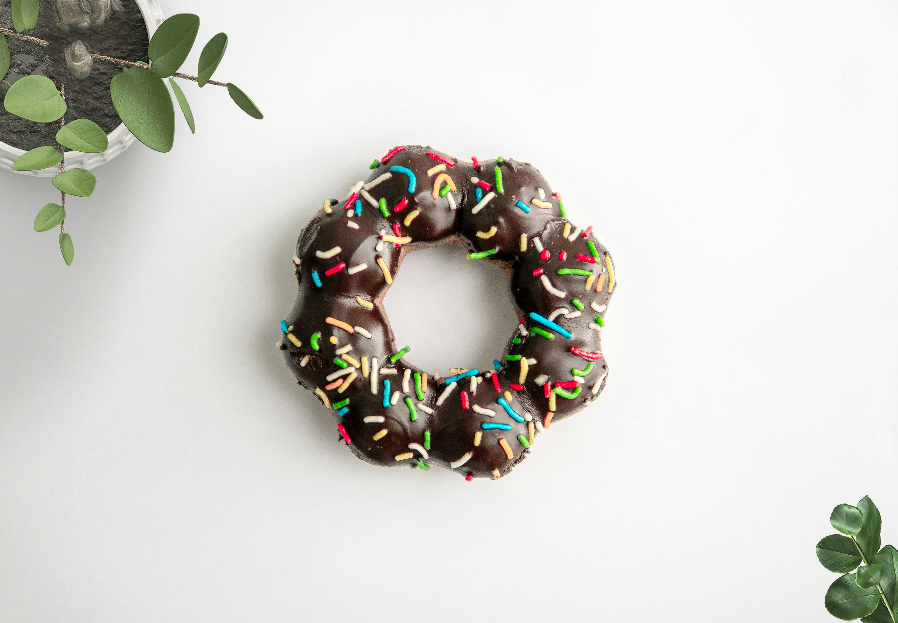
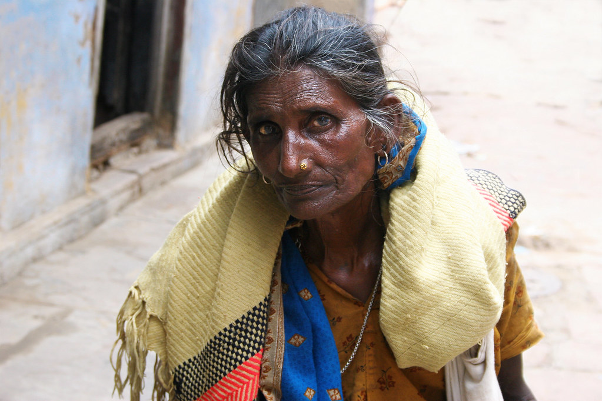
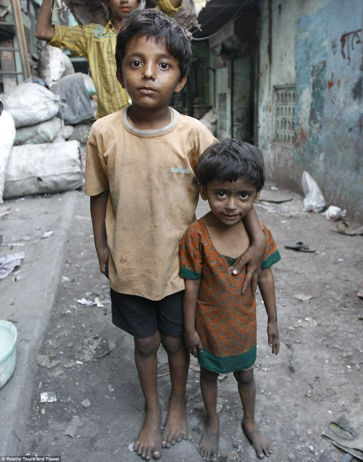

<!DOCTYPE html>
<html>
	<head>
		<title>Rajan's Bakery</title>
		<link href="style/style.css" rel="stylesheet">
		<link rel="preconnect" href="https://fonts.googleapis.com">
		<link rel="preconnect" href="https://fonts.gstatic.com" crossorigin>
		<link href="https://fonts.googleapis.com/css2?family=Josefin+Sans:ital,wght@0,100..700;1,100..700&display=swap" rel="stylesheet">
		<meta name="viewport" content="width=device-width, initial-scale=1"/>
</html>

<body>

	<!-- Header & Nav -->
	<header>
		<h1>Rajan's Bakery</h1>
		<nav>
			<ul id='nav-container'>
				<li><a href='#about-us'>About<span> Us</span></a></li>
				<li><a href='#products'><span>Our </span>Products</a></li>
				<li><a href='#people'><span>Our </span>People</a></li>
			</ul>
		</nav>
	</header>

	<!-- Logo & Strapline -->
	<section id='background'>
		<h1>Rajan's Bakery</h1>
		<h2>Where spices and baking collide in an explosion of taste<p>
	</section>

	<!-- About Us -->
	<section id='about-us'>
		<h1>About Us</h1>
		<div id='about-us-container'>
			<p>Rajan's Bakery was founded in 1879 in the remote hills of northern Pakistan. Since then, the family business has been passed down through generations. The current owner, Rajan Singh, migrated to Bradford, UK, in 1976 and brought the business with him, bringing the joy and exquisite taste to western shores for the first time.</p>
			<p>Since moving to the UK, Rajan's Bakery has gone from strength to strength, and it is seen as a staple to many people in the lovely city of Bradford. In 2011, a second location was opened in Leicester as word spread across the country about how good our selection of cakes, bakes and treats were!</p>
			<p><strong>Fun Fact:</strong> The original tray used to make the first batch of curry-infused croissants has never been cleaned and is still used to this day. This is what gives us our incredible unique flavour!</p>
		</div>
	</section>

	<!-- Our Products -->
	<section id='products'>
		<h1>Our Products</h1>
		<div id='products-container'>
			<figure>
				
				<figcaption>Curry Bread</figcaption>
			</figure>
			<figure>
				
				<figcaption>Japati Cake</figcaption>
			</figure>
			<figure>
				
				<figcaption>Masala Croissant</figcaption>
			</figure>
			<figure>
				
				<figcaption>Mud Doughnut</figcaption>
			</figure>
			<figure>
				
				<figcaption>Lamb Tikka Samosa</figcaption>
			</figure>
		</div>
	</section>

	<!-- Our People -->
	<section id='people'>
		<h1>Our People</h1>
		<div id='people-container'>
			<figure>
				
				<figcaption>
					<h3>Rajan</h3>
					<p>Owner</p>/
				</figcaption>
			</figure>
			<figure>
				
				<figcaption>
					<h3>Shamandeep</h3>
					<p>Secretary & wife of Rajan</p>
				</figcaption>
			</figure>
			<figure>
				
				<figcaption>
					<h3>Amanpal & Deepak</h3>
					<p>Rajan & Shamandeep's two young sons who have been working at the bakery for several years</p>
				</figcaption>
			</figure>
		</div>
	</section>

	 <!-- Footer -->
 	 <footer>
    	<p>&copy; 2024 Rajan's Bakery (c)</p>
  	</footer>

</body>